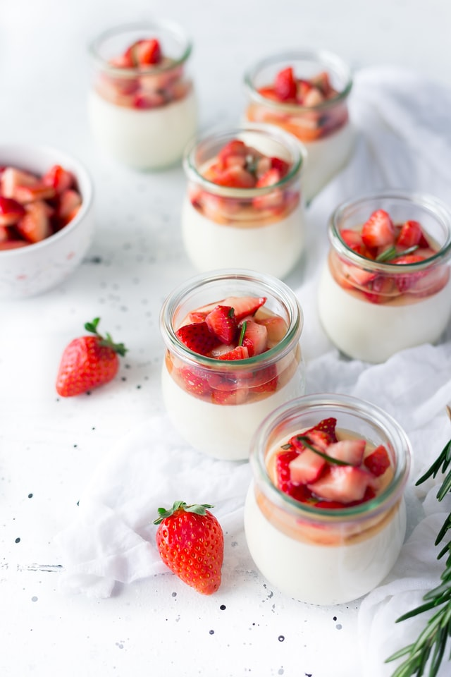

Magnolia Tatlisi

Tarifin Hikayesi
4 Kisilik | 30dk Hazirlik, 20dk Pisirme
Magnolia tarifi arayanlar için enfes bir önerimiz var.
Ünü New York pastanelerinden dünyaya yayıldıktan sonra,
özellikle günümüzde popülerliği artan bu tatlıya,
ülkemizde oldukça fazla ilgi gösteriliyor. Yapımında un, bebe
bisküvisi, krema ve meyve kullanılıyor. Bu tarifin birbirinden
farklı malzemeleri kullanarak yapılan çeşitleri
bulunuyor. Peki çilekli magnolia tarifi nedir? Magnolia nasıl yapılır?
Listemizde verilen malzemeleri
hazırladıysanız, tarifin detaylarına geçebilirsiniz.
Magnolia Tarifi Videosu İçin Malzemeler
- 5 Su bardagi sut
- 4 yemek kasigi un
- 100 ml krema(yarim kutu)
- 3/4(bir yarim+bir ceyrek) su bardagi seker
- Vanilya
- 1 yumurta
- 1 paket bebe biskuvisi(Yulafli diger biskuviler de tercih edilebilir
- 1 su bardagi findik
- 6-8 adet cilek ya da isteginize gore orman meyvesi
Magnolia tatlisi nasil yapilir?
- Uygun bir tencereye 1 lite sutu alin
- Sutu, yumurtayi, kremayi, unu, sekeri karistirarak pisirin.
- Muhallebi kivamina gelip, goz goz olana kadar karistirin.
- Koyu kivam aldiginda, icine vanilyayi da ekleyerek altini kapatin.
- Bebe biskuvilerinizi rondodan gecirin
- Findiklari da rondodan gecirip, bebe biskuvilerinin icine karistirin.
- Kuplara biskuvi findik karisiminizdan, muhallebinizden ve meyveler koyun. Siralamasi, miktarlari tamamen sizin zevkinize kalmis.
- Magnolianin bu sunumu icin; ben karadut, cilek ve findik kullandim
Afiyet olsun